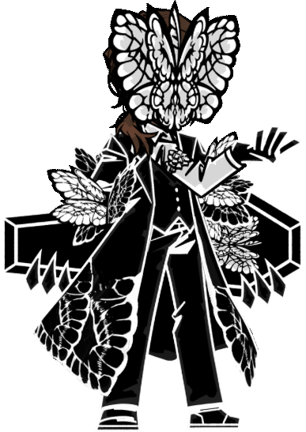

E.G.O
Oque são EGOS?
EGO é uma manifestação física das vontades/sentimentos de algo ou alguêm
Mas como isso funciona para o jogo?
Podemos obter diferentes EGOs por meio da Extração, ou pela dispensa, por meio da extração, é possível obter um EGO 000(maior raridade) com 3/100 ou 3% de chance, sendo que todas EGOs do jogo, com exceção dos EGOS de Walpurgisnacht podem ser obtidas.
E a dispensa? Bom, a dispensa é separada por "Standard Extraction", seasons e Walpurgisnacht, para obter um EGO pela dispensa, é preciso gastar 400 fragmentos do sinner desejado, pode-se obter fragmentos de ego através das extrações e as caixas de fragmentos de ego.
Vale ressaltar que, assim como a extração, não é possível obter EGOs de Walpurgisnacht a qualquer momento, e nem as EGOs da season passada, um exemplo disso é, como estamos na season 7, não é possível obter EGOs da season 6 diferente das extrações.
Walpurgisnacht
O que é o Walpurgisnacht? É um evento recorrente sem data definida, geralmente de 4 em 4 meses, mas, não é uma garantia
O Walpurgisnacht trás EGOs de outros jogos da project moon, um exemplo desses é o Solemn Lament Gregor que é baseada na Funeral Of The Deal Butterfly.


Durante o Walpurgisnacht, os EGOs exclusivas do Walpurgisnacht podem ser obtidos pela dispensa ou extração
Mas como isso funciona em combate?
EGOs consomem recursos, e possuem niveis de threadspin de I - V, sendo o V atualmente exclusivo para os EGOs Fourth Match Flame.
Todo EGO do Threadspin 2 a diante possui uma passiva que se ativa pelo resto do combate após o primeiro uso.
Todo sinner tem 5 espaços de EGOs disponivels, sendo esses [ZAYIN],[TETH],[HE],[WAW] e [ALEPH], que respectivamente gastam mais recursos e sanidade para ser ativo, podendo corromper o sinner quando a sanidade após o uso fica abaixo de 0
Após corromper, o ataque do EGO sera alterado para a versão distorcida, que ataca indiscriminadamente inimigos e aliados, no entanto, forçar um overclock gastando 50% a mais de recursos, pode-se ativar a versão distorcida sem que aliados sejam alvos